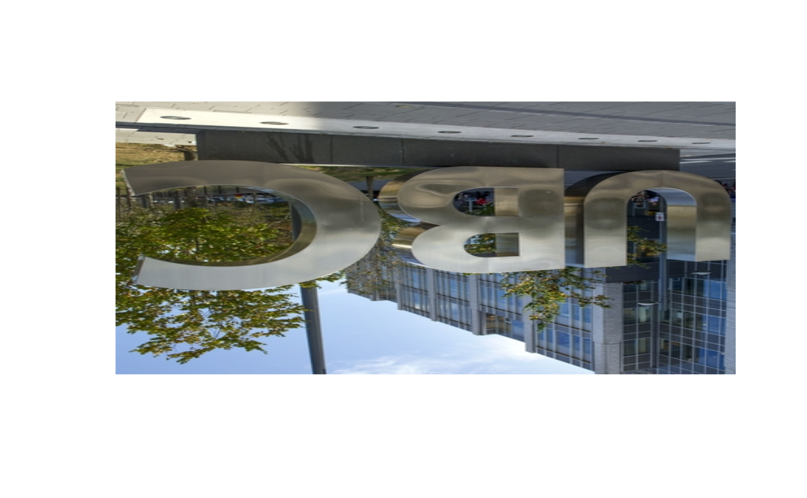

This document introduces you to ImgHelpR’s functions and how to use them.
ImgHelpR makes basic image manipulation easy in R. With ImgHelpR, beginners can easily crop, rotate, compress, or change the color scale of a given image
Data
To explore basic image manipulation with ImgHelpR, a test image named ubc.jpeg has been provided. The JPEG image needs to be read in as an array; we recommend using via jpeg::readJPEG('path') . To display the image,
# read image in via JPEG
ubc <- jpeg::readJPEG('../test_img/ubc.jpeg')
# display test image
plot(0:1,0:1,type='n',ann=FALSE,axes=FALSE)
rasterImage(ubc, 0,0,1,1)
Functions
ImgHelpR is comprised of 4 main functions:
Crop(img, width, height)This function takes an image and the desired height/width as input, and returns a cropped image.ImgRotate(img, degree)This function rotates an image either 90, 180, 270, or 360 degrees from it’s original orientation.ColorConv(img, color)This function converts an image to a gray, red, green, or blue.ImgCompress(img, method, level=1)This function compresses an image to a user-defined compression level.
Crop Images with Crop()
-
Crop()cuts an image’s dimensions to a desired size. There are three inputs,img,height,widththat must be inputted by the user. The function returns an array, which can be read intorasterImageas shown in the Data section.
# display test image
plot(0:1,0:1,type='n',ann=FALSE,axes=FALSE)
rasterImage(ubc, 0,0,1,1)
# crop image
cropped_ubc <- Crop(ubc, 300, 300)
org_dim <- dim(ubc)
crop_dim <- dim(cropped_ubc)
# display cropped image
plot(0:1,0:1,type='n',ann=FALSE,axes=FALSE)
rasterImage(cropped_ubc, 0,0,1,1)Rotate Images with ImgRotate()
ImgRotate() rotates an image 90, 180, 270, or 360 degrees counterclockwise. There are two inputs, img and degree, that must be inputted by the user. The function returns an array, which can be read into rasterImage as shown in the Data section.
# display test image
plot(0:1,0:1,type='n',ann=FALSE,axes=FALSE)
rasterImage(ubc, 0,0,1,1)
# rotate image
ubc_180 <- ImgRotate(ubc, 180)
# display rotated image
plot(0:1,0:1,type='n',ann=FALSE,axes=FALSE)
rasterImage(ubc_180, 0,0,1,1)
Convert Images color with ColorConv()
This function converts an image’s color to gray, red, green, or blue. There are two inputs, img and color, that must be inputted by the user. The function returns an array, which can be read into rasterImage as shown in the Data section.
# display test image
plot(0:1,0:1,type='n',ann=FALSE,axes=FALSE)
rasterImage(ubc, 0,0,1,1)
# convert to gray
green_ubc <- ColorConv(ubc,color = "green")
# display green image
plot(0:1,0:1,type='n',ann=FALSE,axes=FALSE)
rasterImage(green_ubc, 0,0,1,1)Compress Images with ImgCompress()
This function compress images to a user defined compression level. There are three inputs, img, method, and level. The method argument refers to the compression method, of which there are two options: method = "resize" or method = "SVD". resize compresses via interval pixel selection method, while SVD compresses via singular value decomposition. level refers to the level of compression desired by the user, with level 1 = High, 2 =Med, and 3 = Low.
The function returns an array, which can be read into rasterImage as shown in the Data section.
# display test image
plot(0:1,0:1,type='n',ann=FALSE,axes=FALSE)
rasterImage(ubc, 0,0,1,1)
# compress image
compress_ubc <- ImgCompress(ubc, method = "resize", level = 3)
# display compressed image
plot(0:1,0:1,type='n',ann=FALSE,axes=FALSE)
rasterImage(compress_ubc, 0,0,1,1)